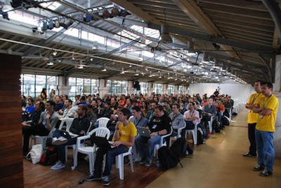
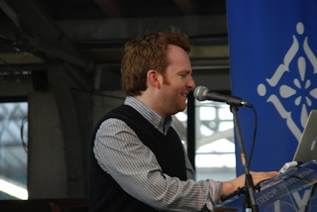
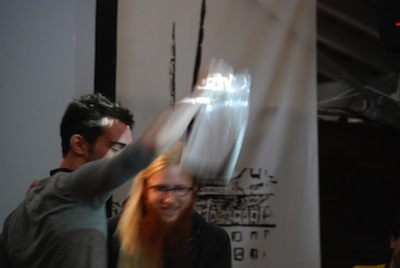

Metaduck


LXJS 2012 was a blast. I had so much fun and pride in hosting friends, collegues and heroes in Lisbon. I loved being part of briging in some of the cool people and experiences I had had in other conferences to Portugal and portuguese developers. (I'm by no means a patriot, but I think everyone should do their part in making the place they live at a better one).
LXJS 2012 did 400 EUR or less in profit, and that's not taking into account any of my travels or effort. The same goes for the organizers and volunteers: none of them got paid a penny. Not that I don't believe in people getting paid, by the contrary, but you have to see how the whole idea for the conference started out:
Initially we were going to do a local meet up for 50 or 100 people max, and perhaps bring in a couple of speakers from abroad. By the end we had 2 portuguese speakers from a total of 30, had to stop selling tickets when we reached 250 attendees and had brought in 6 major sponsors and 19 others.
Even though I think everyone had fun, not everything went smoothly. Partly because this was out first time organizing a conference, we had much to learn. Also, all the organizers did this on their spare time, some times sacrificing families, studies or income.
The 2012 venue was beautiful, but quirky, to say the least. They didn't antecipate the heat, and so they had to open the windows in the main room,bringin in some of the smell from a local fish market. As Seb Lee-Delisle, the first keynote said something like: "this is the first conference I've been to that has a slight smell of fish". And Max Ogden even got a chance to go buy a fish and offer it at the end of his talk. But I think everyone ignored that fact or got used to it.
 
Also, the seats were uncomfortable. I had explicitely asked for the wooden and iron chairs they had, but they put in some shitty plastic ones. When I noticed it was too late, we had no time to correct this.
Finally, the WiFi was a disaster.
(All of this are points that will be taken care of in the next edition, mainly because the venue will not be the same).
But anyhow, we got raving reviews, and the vast majority of folks that answered the survey told us they liked it and would be coming a next year. The parties were free and a blast, everyone was "exhausted" on the day(s) after... Also, the twitter feedback was very encouraging!
LXJS 2012 was, for me, a pain: I had to lead the organization effort from the place I live. I'm used to geographically distributed teams, but there are few things that demand more physical presence than event organization. I was in Lisbon for only 4 days around the time of the conference to help prep up the last details, and those were filled days (and nights), I should say.
This year the team remains somewhat the same in its elements, but will be headed by the LXJS 2012 Alumni David Dias, who showed real organizational skills last year and, in the meantime did some other events and, very importantly, lives in Lisbon. Me and Nuno will be part of the team supporting David this year, and I think LXJS 2013 has a super consistent strong team with and a strong operations lead.
I'm proud of this team, and we'll make LXJS 2013 kick ass.
{kind=link}